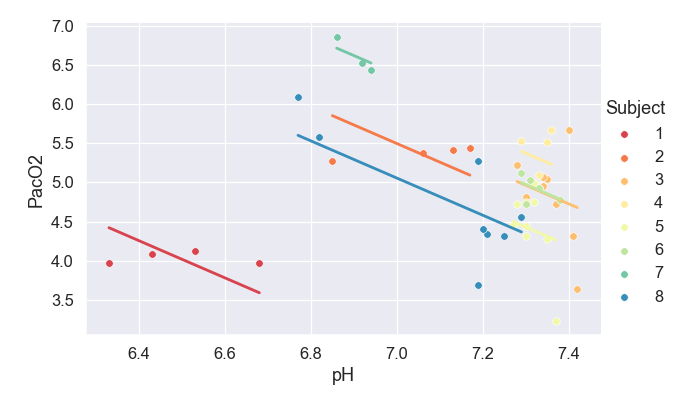

pingouin.plot_rm_corr¶
-
pingouin.plot_rm_corr(data=None, x=None, y=None, subject=None, legend=False, kwargs_facetgrid={'aspect': 1, 'height': 4})¶ Plot a repeated measures correlation.
- Parameters
- data
pandas.DataFrame Dataframe.
- x, ystring
Name of columns in
datacontaining the two dependent variables.- subjectstring
Name of column in
datacontaining the subject indicator.- legendboolean
If True, add legend to plot. Legend will show all the unique values in
subject.- kwargs_facetgriddict
Optional keyword argument passed to
seaborn.FacetGrid
- data
- Returns
- g
seaborn.FacetGrid Seaborn FacetGrid.
- g
See also
Notes
Repeated measures correlation [1] (rmcorr) is a statistical technique for determining the common within-individual association for paired measures assessed on two or more occasions for multiple individuals.
Results have been tested against the rmcorr <https://github.com/cran/rmcorr> R package. Note that this function requires statsmodels.
Missing values are automatically removed from the
data(listwise deletion).References
- 1
Bakdash, J.Z., Marusich, L.R., 2017. Repeated Measures Correlation. Front. Psychol. 8, 456. https://doi.org/10.3389/fpsyg.2017.00456
Examples
Default repeated mesures correlation plot
>>> import pingouin as pg >>> df = pg.read_dataset('rm_corr') >>> g = pg.plot_rm_corr(data=df, x='pH', y='PacO2', subject='Subject')

With some tweakings
>>> import pingouin as pg >>> import seaborn as sns >>> df = pg.read_dataset('rm_corr') >>> sns.set(style='darkgrid', font_scale=1.2) >>> g = pg.plot_rm_corr(data=df, x='pH', y='PacO2', ... subject='Subject', legend=True, ... kwargs_facetgrid=dict(height=4.5, aspect=1.5, ... palette='Spectral'))
